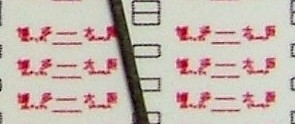
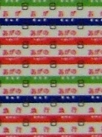
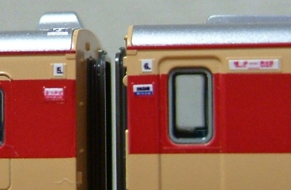
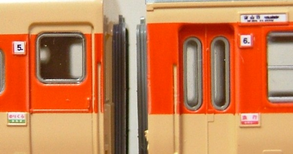

サボを作る
買ってきたパーツではありませんが、インクジェットプリンタとラベルで作った自作のサボです。
サボや方向幕は貼らない「主義」だったんですが、印刷済みなKATO14系に触発されました。
当初、ペンギンモデルやモリヤスタジオを買っていたのですが分厚すぎたり実物に似てないのが気に食わず
結局自作することに。
行き先を自由に設定できたり、車種に合わせて大きさを調整できるので楽しめます。
つくりかた
- Excelで元データを作成。
- プリンタはキヤノン Pixus IP4700 (9600dpi × 2400dpi) を使用。
- ラベルは A-One #28795 (ホワイト、光沢0.07mm厚) を使用。探した中で、最も薄いインクジェット用の白色ラベルです
元となるExcelファイルです。
KATOキハ82用とTOMIXキハ58用を作ってみました。
- プリンタの「印刷設定」で20%に縮小印刷してください。
- フォントは 国鉄方向幕フォント を使用していますが、
この大きさですのでMSゴシックとかでも違いはわからなさそうな気もします。
- Excelでは、ツール->オプションの、"色"タブで色を調整することができます。
このファイルも赤色を変更しています。
できあがり
こんな感じになります。
まずはスケール感がわかる写真を。黒い物体は0.5mmシャーペンの芯です。

プリンタと視力とデジカメの限界に挑戦、という感じです。
使っているデジカメの接写では、もはや解像度に追いついてません。
↓キハ82用


↓キハ58用


貼ってみました
|

|
キハ82好きな山陰の「まつかぜ」です。
博多⇔新大阪 (山陰本線経由)。山陰本線経由がまったく読めないのはご愛嬌として、
このサイズで博多と新大阪が読めるとは思っていませんでした。
|
|

|
キハ58は「のりくら」としています。
「のりくら/指定席」などは自作でないと作れないサボですね。
行き先は富山行(高山経由)です。こちらも "富山行" までは読むことができびっくり。
「丹後」や「だいせん」もほしいので、キハ28買おうかな…
|
Wordでつくってみる
Excelだと文字の横幅を調整できないため、表現力に限界があり、できるサボが限られていました。
また、見た目そのままに印刷されないためちょっと調整が面倒。そこで、Wordのオートシェイプで作ってみました。
当初はフリーのドロー系ソフト(inkspace)で作ったのですが、画面上は超いい感じなものの印刷が
ポストスクリプト形式対応のプリンタしかできず、家庭用インクジェットでは無理。
pdf や bmp に落とすところで形が崩れたりぼやけたりするので、結局ワードに。

12系但馬ビーチ号用と、八甲田用を作ってみました。
元ファイルです。
フォントは 国鉄方向幕フォント を使ってるのでそのインストールが必要です。
ファイルを解凍してWordで開き、20%縮小印刷でご使用ください。
トップへ戻る